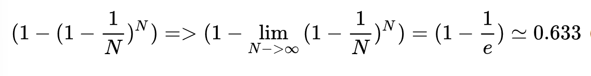
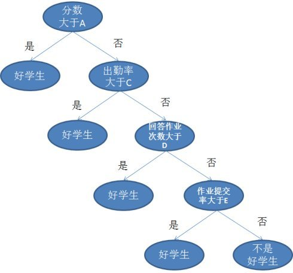
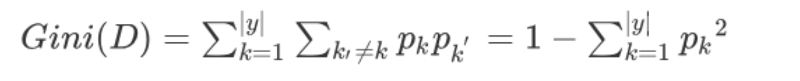
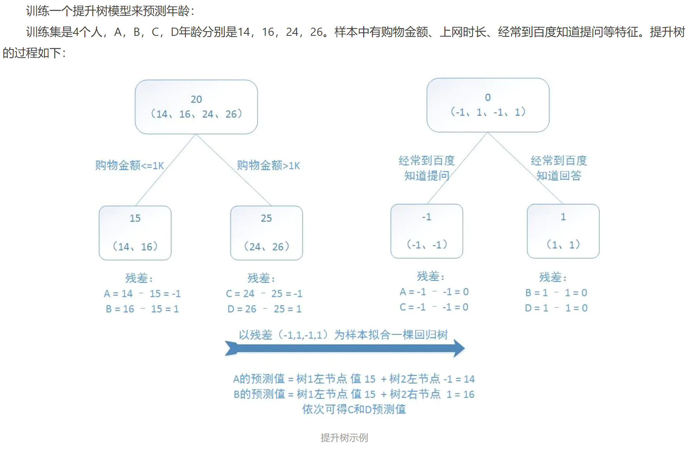
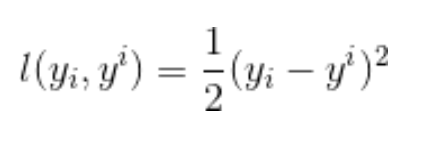
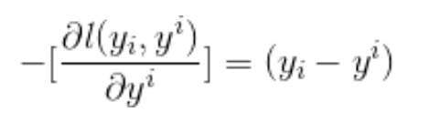
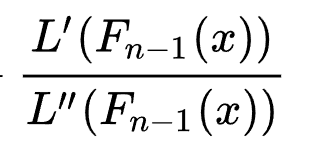
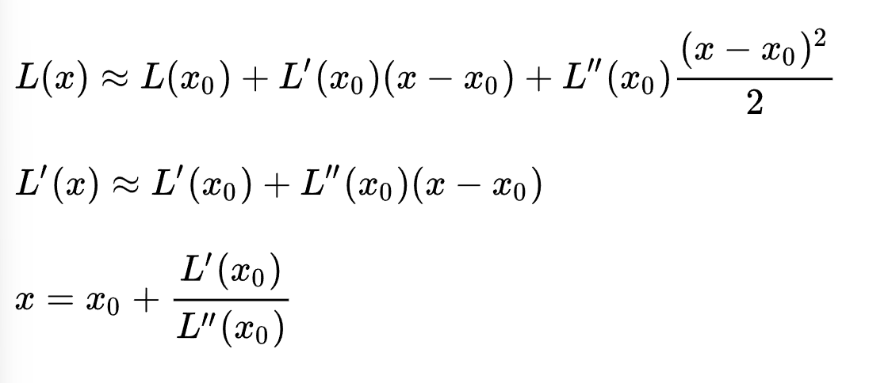
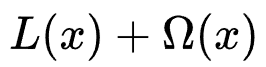
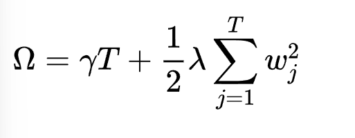

随机森林 GDBT XGboost 三种学习的分类算法笔记
监督学习的分类算法
集成算法
XGboost和随机森林等算法都是决策树来做基分类器
随机森林（Random Forest），GBDT(Gradient Boosting Decision Tree)梯度提升决策树，XGboost（Extreme Gradient Boosting，是一种基于GBDT来改进实现的算法）都是集成算法（Emseble Learning）。是构建多个基学习器，然后通过一定策略结合把它们来完成学习任务的，常常可以获得比单一学习效果更好的学习器。
集成学习算法封装在sklearn中emseble模块中
按照个体学习器（基学习器）之间的关系，主要分为Bagging和Boosting算法思想。
Bagging
Bagging原理是自助采样法（bootstrap sampling）随机得到一些样本集训练，用来分别训练不同的基学习器，然后对不同的基学习器得到的结果投票得出最终的分类结果。与普通的采样的区别是，bootstrap 是有放回的采样，也就是说一个集合中的某些样本有可能在一次采样中被选中多次，而部分样本有可能在一次采样中不被选中。最终每一次采样结果都有大约63.3%的样本被选中。考虑N次放回重复抽样，每次抽样每个样本被选中的概率为 1/N，进行N次抽样，某一个样本被选中的概率为：

随机森林就是Bagging算法族中的一种。
采用bootstrap采样的好处
集成学习的目的为了使用多个不同的子模型来增加最终模型预测结果的鲁棒性和稳定性，如果多个子模型都采用同样的数据集训练，那么训练出的子模型都是相同的，集成学习将会没有效果。使用bootstrap可以从原始数据集中得到很多个不同的数据集，而且天然的有测试集（余下的36%的样本）来评估算法模型的识别率。这些余下的样本称为袋外数据（out of bag data, oob）这样的话，使用随机森林时，我们可以不预先划分测试集和训练集，只需要用oob数据来做为测试集来验证即可（需要在样本个数N足够大的情况下才可以，如果样本个数很小，那么有可能出现没有或者有很少的oob数据的情况）。
在sklearn中我们可以创建随机森林分类器的时候指定 oob_score=True 使用oob数据进行验证:
1 | rfc = RandomForestClassifier(n_estimators=100,oob_score=True, bootstrap=True, criterion=criterion) |
Boosting
Boosting是提升算法，它通过反复学习得到一系列弱分类器，然后组合这些弱分类器得到一个强分类器，把弱学习器提升为强学习器的过程。主要分为两个部分，加法模型和向前分步。加法模型就是把一系列的弱学习器相加串联为强学习器。其中GBDT和XGboost就是属于Boosting算法中的加法模型。
Boosting方法训练基分类器时采用串行的方式，各个基分类器之间有依赖。（Bagging方法中各个基分类器之间没有依赖关系，可以进行并行训练，但是Boosting是串行的）
决策树
本文介绍的几种集成算法全部都是基于决策树做基学习器，故首先介绍决策树
决策树是一种有监督的机器学习方法，是一种树形结构，其中每个内部节点表示一个属性上的判断，每个分支代表一个判断结果的输出，最后每个叶节点代表一种分类结果。
如下图就是一个简单的分类问题训练得来的决策树，拿到测试集之后只需要一步一步根据条件判断就可以得到最终的结果。

决策树生成过程
决策树的训练中有两个关键的点，第一个是每个节点分裂的特征的选择（选择哪个属性来进行判断），第二个是该特征的对应阈值的选择（用该属性的哪个值来进行划分）。一般的算法中通常采用二叉树来训练模型，一些情况下也可以用多叉树来处理特殊的数据。
决策树也有很多种类，其中最常用的是CART树（Classification And Regression Tree）分类回归树，该树的结构是二叉树，一个特征通过一个阈值来划分成左右两个节点。如果是分类树，通常采用GINI系数来衡量对每个特征划分之后的收益，GINI系数代表了总体的不纯度，GINI在0~1之间，越接近1代表总体越混乱，越接近0代表总体越有序，GINI == 1理论上代表总体毫无关系，GINI == 0 理论上代表总体有序，和信息熵的概念类似。（在sklearn创建随机森林等的模型时，默认采用的是GINI系数的CART树来训练基学习器，我们可以手动指定参数来指定其他的损失函数）
gini系数公式如下：

如果是回归树通常采用平方平均误差（MSE）来衡量收益，公式为：
目标也是让该函数最小。
具体生成过程：
1、计算对每一种特征的每一个阈值的gini系数，选择最小的情况来作为本节点的划分，之后依次对生成的子节点通过同样的原则来进行划分。
2、如果某个节点已经全部被分为一类或者没有待划分的特征属性，那么停止子节点划分。
3、在实际训练中，通常会用到剪枝策略，剪枝是为了防止树出现过拟合的情况，有预剪枝和后剪枝的基本策略。预剪枝：核心思想就是在每一次实际对结点进行进一步划分之前，先采用验证集的数据来验证如果划分是否能提高划分的准确性。如果不能，就把结点标记为叶结点并退出进一步划分；如果可以就继续递归生成节点。后剪枝：后剪枝则是先从训练集生成一颗完整的决策树，然后自底向上地对非叶结点进行考察，若将该结点对应的子树替换为叶结点能带来泛化性能提升，则将该子树替换为叶结点。
随机森林
随机森林算法（Random Forest， RF）是利用上述的Bagging思想的一种集成学习方法，在训练阶段，随机森林使用bootstrap采样从输入训练数据集中采集多个不同的子训练数据集来依次训练多个不同决策树；在预测阶段，随机森林将内部多个决策树的预测结果取平均得到最终的结果。
在sklearn实现中，可以通过指定criterion参数来创建不同的收益计算函数的模型，分类模型可以指定‘gini’或者’entropy’，回归可以指定’mse’或者’mae’。
训练过程
通过指定的生成基分类器的数量n，通过上述的bootstrap准则来抽取出对应的n组样本，然后对每一组分别训练得到一个决策树。
模型预测
将要预测的样本输入到每一个决策树中，根据所有决策树的结果进行投票选择最终结果。（如果是回归树，则对所有回归树结果进行求平均值）
优点
- 相较于决策树，识别率提高很多。（原理是假设决策树识别率百分之八十，那么n个决策树组合起来投票产生结果的错误的情况就是超过半数的决策树识别错误，概率大大减少）
- 相较于Boosting算法可以实现并行计算
- 有较强的随机性，抗噪声能力很强，不容易过拟合
缺点
- 如果设置决策树个数很多的话，训练过程中会占用大量的空间和时间。
- 对于维度非常高的稀疏数据，表现不好。
GBDT
GBDT（Gradient Boosting Decision Tree）梯度提升决策树，是一种集成学习方法，集成思想采用Boosting思想来训练模型，
它的基本思路是将基分类器层层叠加，每一层在训练的时候，对前一层基分类器分错的样本，给予更高的权重。测试时，根据各层分类器的结果的加权得到最终结果。
GBDT由多棵回归决策树（弱分类器）组成，（但GBDT强分类器可以用于回归和分类预测）。通过多棵回归树来共同决策，第一个树按照正常的回归树来学习，之后每一棵回归树都是学习之前所有树的结论和残差，拟合得到一个当前的残差回归树。残差是 = 真实值 - 预测值。提升就是整个迭代过程生成的所有回归树的累加。
一个训练模型的案例参考：

注意
GDBT既可以做为分类模型也可以作为回归模型，但是其中用到的基学习器都是回归决策树。
梯度
之所以叫梯度提升，是因为一般来说在每一轮迭代的时候都由回归树生成一个预测值，此时的损失函数采用均方差损失函数，公式为：
则负的梯度为：
可以看出来刚好就是 真实值 - 预测值，即上述的残差值，所以每次利用残差值来构建下一棵树，实际上就是一个梯度提升的过程。
模型预测
预测的过程，即为将样本数据依次放入基学习器中进行学习，最后将每颗树的预测值累加起来即为最终结果。
优点
- 预测阶段的计算速度快，树与树之间可并行化计算。
- 因为Boosting模型保证低偏差，故在基学习器上可以关注于降低方差，树的深度不用很深，不容易出现过拟合的现象
缺点
- GBDT在高维稀疏的数据集上，表现不如支持向量机或者神经网络。
- 训练过程需要串行训练，只能在决策树内部采用一些局部并行的手段提高训练速度。
XGboost
XGboost（Extreme Gradient Boosting）是一种基于GBDT算法改进细节而得到的算法。
在GBDT中，每次生成下一个弱学习器，都是把损失函数的梯度（残差）作为学习目标，相当于利用梯度下降法进行优化来逼近损失函数的最小值，也就是使得损失函数为0，最终学习器尽可能接近真实结果。
在xgboost中，最大的区别是在于目标函数的定义
1、把损失函数的二阶泰勒展开的差值作为学习目标，相当于利用牛顿法进行优化，来逼近损失函数的最小值，也就是使得损失函数为0。
二阶泰勒展开的差值为：
推理过程：

本质上是用一个近似的函数来代替残差进行拟合计算，如此的话最终结果可以具有更强的泛化能力，整体方差更小
2、在目标函数中加入正则项
正则项是为了防止模型过拟合。故一般的损失函数L(x)变为目标函数：
随着树的复杂度增大，对应的目标函数也就变大，这样就有效防止了过拟合
正则项函数的定义一种实现为：

其中T为叶子节点的个数，w为叶子节点的预测值，对叶子节点个数进行惩罚，这样就实现了在训练过程中预剪枝。xgboost是对GDBT算法的工程化实现，在其中引入了很多的细节，最终可以实现比GDBT识别率更高，模型泛化能力更高。